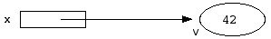
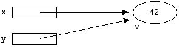

aritméticos: + - * / % lógicos: ! && || relacionais: < > <= >= == != bits: >> << & ^ |~ atribuição: = += -= *= /= %= &= |= ^= <<= >>= condicional ?: cast: (type) inc/dec: expr++ ++expr expr-- --expr sequenciação: , sizeof: sizeof apontadores: * & -> [] field: . (para acesso a campos de registos e uniões) agrupamento: (expr)Note que em C (tal como em Java), a atribuição produz um resultado e por isso é considerada uma expressão, não um comando. O valor da expressão v = exp é o valor que fica na variável v depois da expressão exp ter sido avaliada e depois da atribuição ter sido concretizada.
O C suporta sobrecarga (overloading) de alguns operadores. Por exemplo, o operador + é usado para denotar três operações diferentes: a soma inteira; a soma real; a soma entre um apontador e um inteiro.
() [] -> . expr++ expr-- esq ! ~ ++ -- - (type) * & sizeof ++expr --expr dir * / % esq + - esq << >> esq < <= > >= esq == != esq & esq ^ esq | esq && esq || esq ?: esq = += -= etc. dir , esqExemplo. A complexa expressão logica abaixo não precisa de nenhum parêntesis:
if( year % 4 == 0 && year % 100 != 0 || year % 400 == 0 )
printf("Ano bissexto\n") ;
else
printf("Ano comum\n") ;
Portanto a ordem de avaliação não está geralmente definida e devemos evitar escrever expressões cujos efeitos ou resultados dependam da ordem de avaliação. Exemplos:
i = i++ ; /* o valor final de i não está definido */ f(i++, i++) ; /* o valor dos argumentos não está definido, mas o valor final de i não tem problema */ f(*p1++, *p2++) ; /* o valor dos argumentos não está definido no caso dos dois apontadores referirem a mesma posição de memória */ f() + g() /* qualquer das funções pode ser executada em primeiro lugar */O último exemplo só é problemático se as duas funções produzirem efeitos laterais que sejam dependentes da ordem de avaliação.
Os pontos de sequenciação do C estão associados aos seguintes operadores:
, && || ?:
char short int unsigned int long int unsigned long int long long int unsigned long long int double long double
5 + 2.0 * 'a' (5.3 + 5) + 7 int i = 200 * 'a'
struct
{
double re, im ;
} myvar ;
mas muitas vezes usa-se a construção typedef para lhes associar um nome. Exemplos:
typedef struct
{
double re, im ;
} Complex;
typedef union
{
int x;
char c;
} IntChar;
typedef int Vetor[5];
typedef int Matriz[2][3];
typedef char String[256];
typedef void *Pointer;
typedef int *IntPointer;
typedef IntPointer *PointerToIntPointer;
typedef int **PointerToIntPointer;
typedef int IntFunction(void);
typedef IntFunction IntFunctionArray[100];
Eis algumas definições de variáveis usando os tipos definidos anteriormente:
Complex z; IntChar u; Vetor vetor; Matriz matriz; String str; Pointer v; IntPointer pt; IntFunctionArray ops ;
#define MAX_SHAPES 200
typedef enum {
LINE, CIRCLE, RECTANGLE
} ShapeKind ;
typedef struct {
double x, y;
} Point;
typedef struct {
Point p1, p2;
} Line;
typedef struct {
Point centre;
int radius;
} Circle;
typedef struct {
Point top_left;
double width, height;
} Rectangle;
typedef struct { // Isto é um tipo SOMA, programado com a ajuda duma UNION
ShapeKind kind;
int color;
union {
Line line;
Circle circle;
Rectangle rectangle;
} u;
} Shape;
typedef Shape Shapes[MAX_SHAPES];
Do ponto de vista técnico, os parâmetros de tipos primitivos e de registos são implementados como simples variáveis locais que têm a particularidade de serem inicializadas no momento da chamada da função. Se, porventura, dentro duma função se fizer uma atribuição a um desses parâmetro, está-se apenas a alterar a variável local; nada está a ser alterado no exterior da função.
Sobre a passagem de vetores como parâmetro há duas particularidades especiais. Para se trabalhar em C com vetores, é preciso realmente assimilar estas duas ideias:
Esta opção da linguagem C tem a seguinte justificação: assim a função fica mais geral e torna-se útil em mais situações.
void read_values(int vector[], int n)
{
int i;
for( i = 0 ; i < n ; i++ ) {
printf("vector[%d] = ", i);
scanf("%d", &vector[i]);
}
}
|
Através da utilização de variáveis, é possível ir muito longe na escrita de programas em C. Mas há algumas situações em que o uso de variáveis não é suficiente e é necessário usar mecanismo mais flexível de manipulação da memória:
Em C há tipos específicos para representar apontadores. O tipo dos apontadores que apontam para valores de tipo T escreve-se:
T *Para exemplificar, eis a definição duma variável de tipo apontador para inteiro:
int *pt ;Em C, há duas operações principais para manipular apontadores: o operador & permite obter um apontador para uma variável qualquer, assim
&Variávele o operador * permite aceder ao valor apontado por um apontador, assim:
*Apontador
Vejamos um exemplo. Abaixo, define-se uma variável inteira normal v. A seguir define-se uma variável de tipo apontador para inteiros x e fazemo-la apontar para a variável v. Depois, usamos o apontador para colocar o valor 42 na zona de memória apontada por x.
int v = 0 ; int *x = &v ; *x = 42A seguinte figura, ilustra a situação após a atribuição do valor 42 a *x.

Repare que a variável v pode ser acedida de duas formas: (1) usando o nome v; (2) usando a expressão *x.
Para perceber melhor as possibilidades dos apontadores vamos definir agora um segundo apontador, y a fazê-lo também apontar para a variável v:
int *y = x ;Obtém-se a seguinte situação:

Agora o conteúdo da variável v pode ser acedido de três formas diferentes: (1) usando o nome v; (2) usando a expressão *x; (3) usando a expressão *y.
O operador & chama-se operador endereço. O operador * chama-se operador de desreferenciação.
Repare na seguinte curiosa equivalência, que é válida em C para qualquer variável v:
*&v == v
Falta ainda uma referência à constante predefinida de tipo apontador, NULL. Garante-se que este apontador constante não aponta para sítio nenhum. Pode ser atribuído a uma variável de tipo apontador, por exemplo assim:
int *z = NULL ;Neste caso serve para assinalar que a variável z não está a apontar para sítio nenhum, de momento.
O apontador NULL também pode ser usado em testes, assim:
if (z == NULL) ...
O apontador NULL não pode ser desreferenciado, pois não aponta para sítio nenhum.
typedef struct {
int day, month, year ;
} Date ;
Vamos definir agora uma variável de tipo Date e coloquemos um apontador de tipo Date * a apontar para a primeira:
Date d = {25, 12, 2008};
Date *p = &d;
Para aceder, através do apontador, ao ano da data d, podemos escrever:
(*p).yearMas a utilização de apontadores para registos em C é tão frequente, que foi criada uma notação mais compacta e sugestiva para fazer isso: o operador ->. A seguinte expressão é equivalente à anterior:
p->yearEm geral, a seguinte notação geral permite aceder a campos de registos através de apontadores:
Apontador->Etiqueta
int *pti; double *ptd ; void *v ; pti = ptd ; /* Errado */ pti = (int *)ptd ; /* Válido por causa do cast */ v = ptd ; /* Válido porque se trata de void * */ pti = v ; /* Válido porque se trata de void * */
Esta primeira tentativa não funciona:
void swap(int a, int b) /* Não funciona!!!! */
{
int temp = a;
a = b;
b = temp;
}
A chamada de swap(x,y) não muda nada, porque os parâmetros das funções são implementados usando variáveis locais, inicializadas com cópias dos valores que aparecem na chamada. A função swap faz a troca das cópias locais, mas não troca o conteúdo das variáveis originais. Diz-se que os parâmetros a e b são parâmetros de entrada, porque eles permitem apenas transferir dados de fora para dentro da função.
Para resolver este problema, temos de usar apontadores. A função swap precisa de aceder às variáveis originais através dos apontadores para efetuar a troca. Fica assim:
void swap(int *a, int *b) /* Funciona!!!! */
{
int temp = *a;
*a = *b;
*b = temp;
}
Agora a chamada escreve-se swap(&x,&y) e a troca é realmente efetuada. Diz-se que os parâmetros a e b são parâmetros de saída, porque eles permitem passar dados de dentro para fora da função.
Repare que agora ficámos a conhecer duas maneiras de fazer uma função produzir dados para o seu exterior:
void maxMin(double v[], int n, double *max, double *min) /* precondição: n > 0 */
{
double lmax = v[0];
double lmin = v[0];
int i;
for( i = 1 ; i < n ; i++ ) {
if (v[i] > lmax) lmax = v[i] ;
if (v[i] < lmin) lmin = v[i] ;
}
*max = lmax;
*min = lmin;
}
Exemplo de chamada:
double vect[] = {1.0, 2.9, 34.6, 44.2, 0.01};
double max, min;
maxMin(vect, 5, &max, &min);
Algumas funções de biblioteca também usam parâmetros de saída. Por exemplo, é o caso da função de biblioteca scanf. Veja um exemplo de utilização:
scanf("%d %lf %c", &i, &r, &c);
Considere o seguinte vetor
int vetor[100];Para aceder ao primeiro elemento do vetor, normalmente nós escrevemos:
vetor[0]Mas também podemos escrever o que está a seguir, pois o resultado é exatamente o mesmo.
*vetor
A linguagem C também permite a seguinte atribuição:
int *pt = vetor;e, inclusivamente, permite-se a aplicação de operações sobre vetores a argumentos de tipo apontador. Por exemplo as seguintes expressões são legítimas:
pt[0] pt[5] pt[99]Note que, quando de passa um vetor como parâmetro para uma função, o que realmente se passa é um apontador para a primeira componente do vetor. Portanto um parâmetro de tipo vetor é sempre um parâmetro de saída, apesar de não ser explicitamente declarado como apontador.
Os operadores + e - podem ser aplicados a apontadores para T e inteiros nos seguintes casos:
Para o vetor abaixo são verdadeiras as equivalências indicadas:
Vetor v ; v[0] == *v v[1] == *(v+1) v[-1] == *(v-1) &v[0] == v &v[1] == v + 1Fazer v = v + 1 é proibido pois v é um apontador constante.
#define SIZE 20
int i1[SIZE][SIZE], i2[SIZE][SIZE] ;
int *pt1, *pt2, *ptEnd ;
int i, j;
/* Forma 1 */
for( i = 0 ; i < SIZE ; i++ )
for( j = 0 ; j < SIZE ; j++ )
i2[i][j] = i1[i][j] ;
/* Forma 2 */
for( pt1 =i1 , pt2 = i2, ptEnd = pt2 + SIZE * SIZE ;
pt2 < ptEnd ;
*pt1++ = *pt2++ ) ;
Repare que a primeira forma envolve um ciclo embutido noutro e que, durante a execução, é necessário fazer muitas contas para repetidamente determinar quais as localizações correspondentes às expressões i2[i][j] e i1[i][j].
Quanto à segunda forma, envolve um único ciclo e evita a necessidade de se fazerem as contas atrás referidas.
A segunda forma é mais difícil de perceber, mas é um pouco mais eficiente do que a primeira.
Por exemplo, no código abaixo, define-se um bloco de memória chamado b, e usa-se um apontador de tipo double* para ler um valor real que se encontra guardado a partir do byte 5.
Repare como a variável pt é inicializada: obtém-se o endereço do byte 5 (esse endereço é um apontador de tipo Byte*) e depois aplica-se um cast para o converter num apontador de tipo double*.
#define BLOCK_SIZE 32 typedef unsigned char Byte; typedef Byte Block[BLOCK_SIZE]; Block b; // um bloco double *pt = (double *)&b[5]; // conversão de tipo de apontador double d = *pt; // leitura do valor através do apontador pt